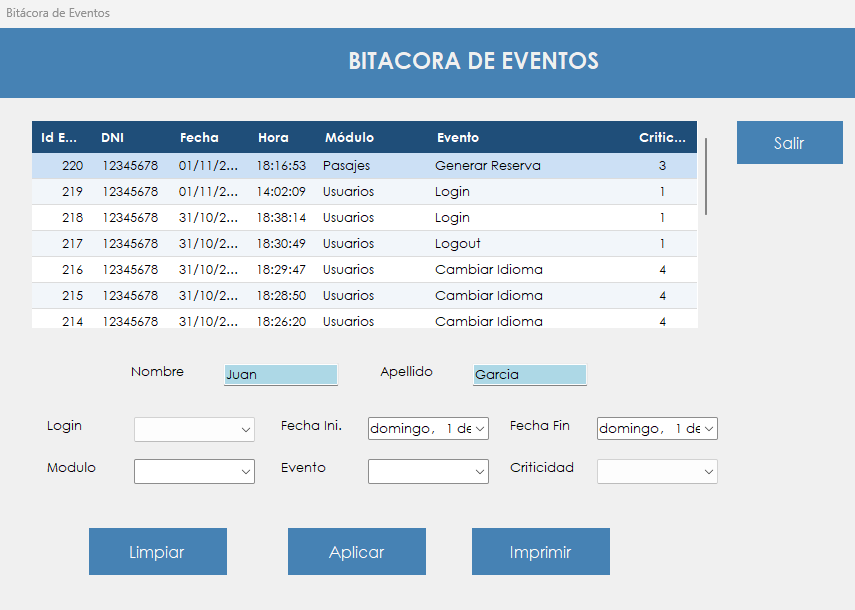

Muestra qué operaciones se hicieron en el sistema, quién las hizo y cuándo, y permite filtrarlas e imprimirlas.
La bitácora es el registro de auditoría de AeroManager. Cada ingreso, venta, cambio de datos o tarea de administración deja un evento con el usuario, la fecha, la hora, el módulo y la criticidad. Permite responder preguntas como quién modificó un dato o qué pasó en una fecha determinada.
Es una pantalla de consulta: los eventos no se pueden cargar, cambiar ni borrar desde acá. El resultado se puede guardar en un PDF para presentarlo o archivarlo.
Desde el menú principal, en Administrador › Bitacora de Eventos. La opción aparece si el rol del usuario incluye la patente correspondiente.

| Control | Para qué se usa |
|---|---|
| Grilla de eventos | Muestra Id Evento, DNI, Fecha, Hora, Módulo, Evento y Criticidad. Al hacer clic en un encabezado se ordena por esa columna. |
| Nombre y Apellido | Se completan al hacer clic en un evento, con los datos de quien lo generó. No funcionan como filtro. |
| Login | Filtra por usuario. |
| Fecha Ini. y Fecha Fin | Definen el período de la consulta. |
| Modulo | Filtra por Usuarios, Administrador, Pasajes, Mantenimiento o Maestros. |
| Evento | Filtra por un tipo de operación, como Login, Crear Usuario o Generar Reserva. |
| Criticidad | Filtra por 1 - Crítico, 2 - Alto, 3 - Medio o 4 - Bajo. |
| Limpiar | Borra los filtros y vuelve a mostrar los últimos tres días. |
| Aplicar | Muestra los eventos que cumplen los filtros. |
| Imprimir | Guarda en un PDF lo que muestra la grilla y lo abre. |
| Salir | Cierra la pantalla. |
| Situación | Qué significa y qué hacer |
|---|---|
| "La fecha de inicio no puede ser mayor a la fecha fin." | El período está invertido. Hay que corregir alguna de las dos fechas. |
| "La fecha fin no puede ser posterior a la fecha actual." | Hay que elegir como máximo el día de hoy. |
| "No se encontraron eventos con los criterios ingresados." | Ningún evento cumple los filtros. Conviene ampliar el período o quitar algún filtro. |
| "No hay datos para imprimir." | La grilla está vacía. Primero hay que hacer una consulta con resultados. |
| "PDF generado correctamente." | El archivo quedó guardado en el lugar elegido y se abre a continuación. |
| "Error al generar el PDF:" seguido del motivo | El archivo no se pudo crear. Después de los dos puntos se indica la causa técnica. Si el archivo de destino está abierto, conviene cerrarlo o elegir otro nombre. |